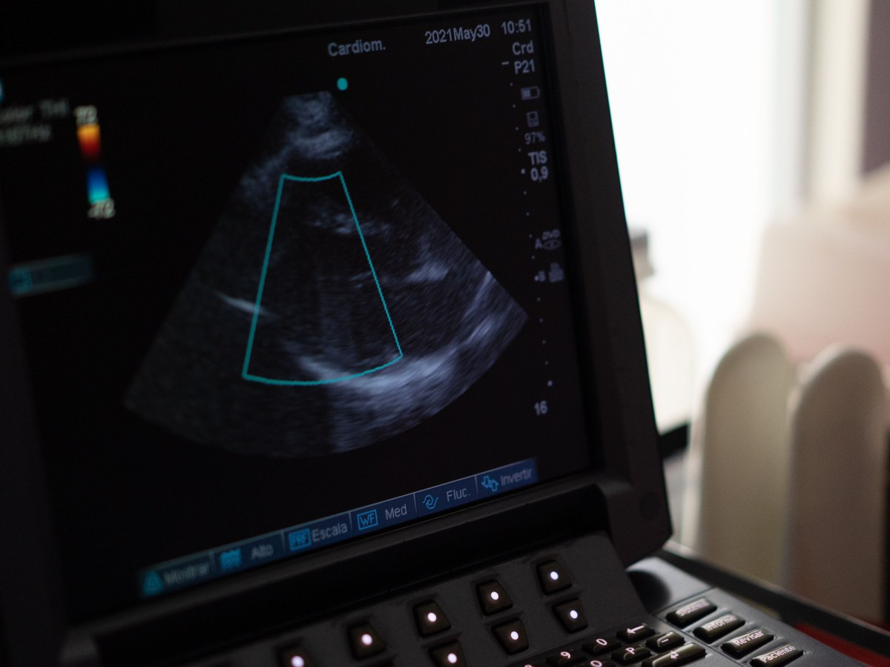
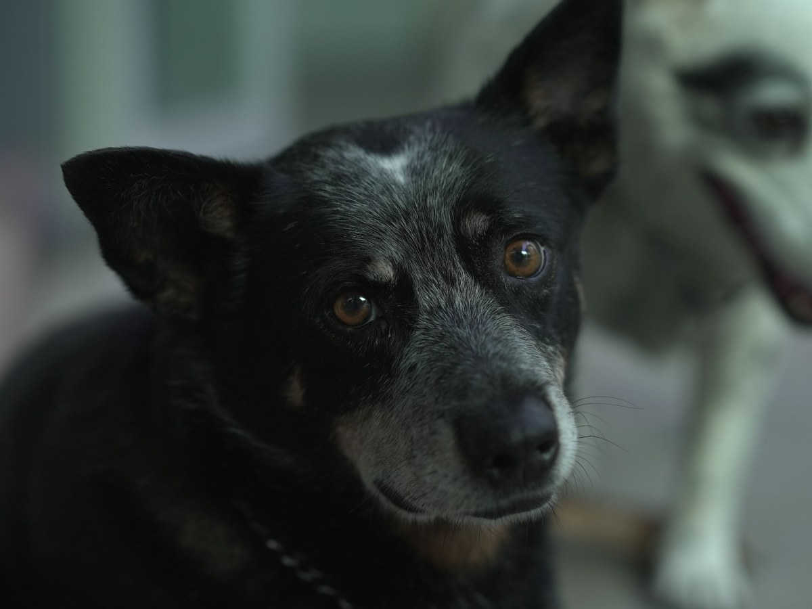
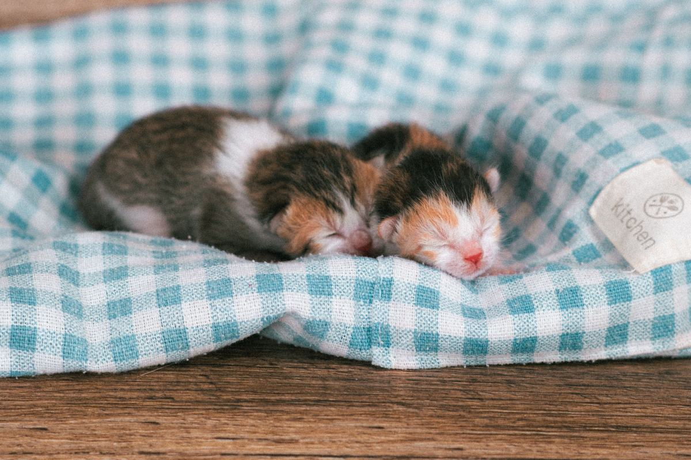
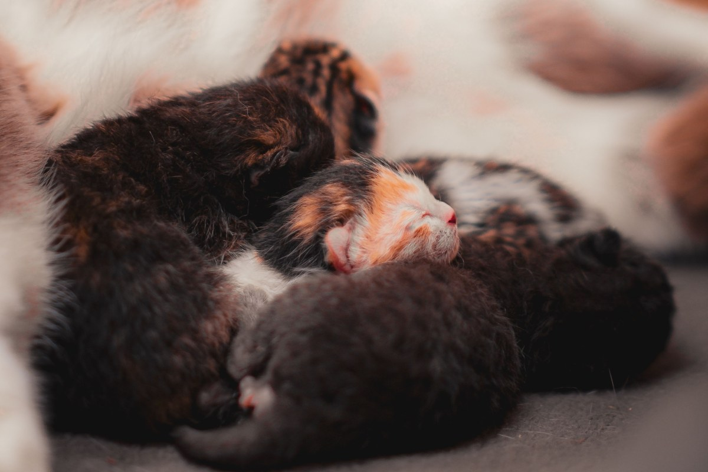

Maipú · Av. Parque Central Poniente 441
Antes de la camada, un mapa.
Una clínica de Maipú con 310 reseñas.
- 310reseñas en Google
- 2.993seguidores en Instagram
- 6días a la semana abierta
- 0páginas propias: su único enlace es Instagram
Antes de la camada
Tu perra o gata va a tener cría
Cuándo ir, antes, durante y después.
- ANTES
Evaluación
Chequeo general y vacunas al día.
- DURANTE
Controles
Según las semanas de gestación.
- DESPUÉS
La madre y la camada
Primer control en los primeros días.
- NO ESPERES
Si algo se ve raro
Decaimiento, sangrado o un parto que no avanza.
Mapa general de cuándo ir: no reemplaza la consulta.
Una camada empieza semanas antes de nacer.
En Parque Central Poniente 441
Lo que hay en Breeder Vet
-

60 min
Consulta inicial
Para conocer a tu animal.
-
30 min
Medicina canina
Consulta general.
-
30 min
Medicina felina
Consulta general.
-

30 min
Consulta y vacuna
Antirrábica, óctuple, leucemia.
-
20 min
Exámenes
Toma de muestras.
-
Camadas
Madre y cachorros
Controles, por confirmar.
Servicios y duraciones de su AgendaPro; los controles de camada, por confirmar.
310 reseñas en Maipú.
Av. Parque Central Poniente 441
Mantas, balanza y paciencia
Las primeras semanas


Fotos de referencia: ninguna es de la clínica.
Dónde estamos
Parque Central Poniente 441, Maipú
- Dirección
- Av. Parque Central Poniente 441
- Teléfono
- (2) 2894 5437
- Horario
- Lun a sáb 10:30–19:00
- @breedervet
Abre de lunes a sábado; el domingo, cerrado.
Av. Parque Central Poniente 441, Maipú Abrir en Google Maps
Para el dueño
Qué es real y qué falta
Lo verificado
Dirección, teléfono, horario, servicios de su AgendaPro, reseñas e Instagram.
Lo de ejemplo
El mapa de la camada y las fotos.
Lo que falta
Si atienden gestación y camadas, su historia y el equipo.